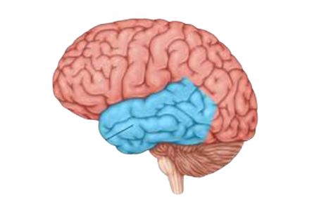
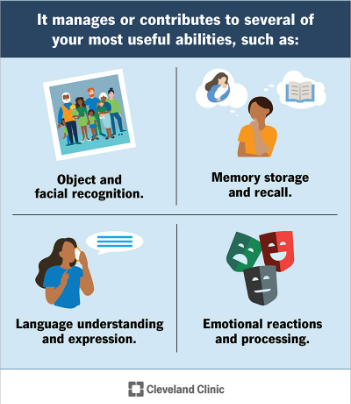

the temporal lobethe temporal lobe is located on both the left and right sides of the brain. it lies above the ear near the temples it is a pinkish color, and is made out of neurons and glial cells, which are the nervous systems' support cells. |
 what the temporal lobe controlsthe temporal lobe controls mainly language, memory, and senses.
|
disorders in the temporal lobesome disorders caused by an imperfection in the temporal lobe specifically are:
|